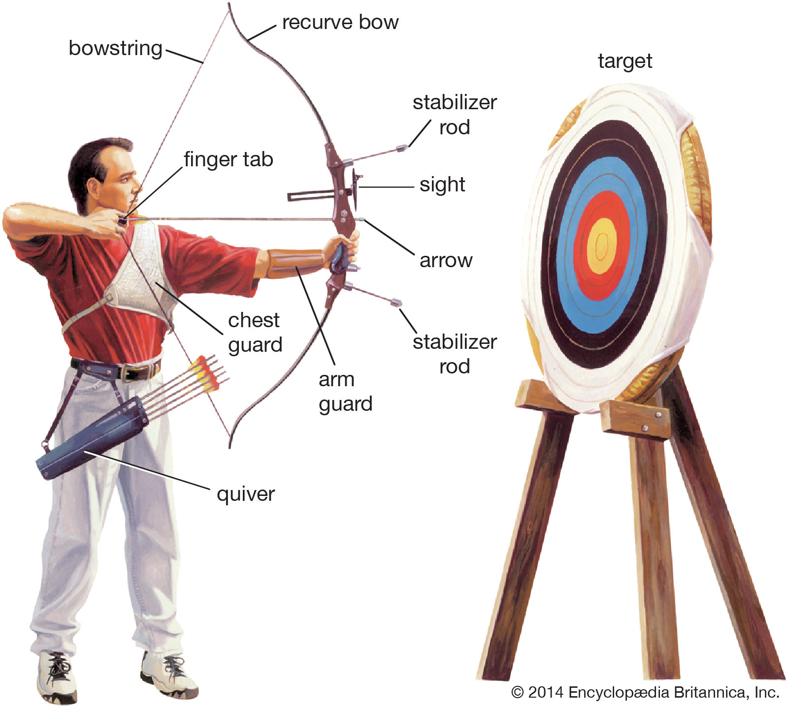
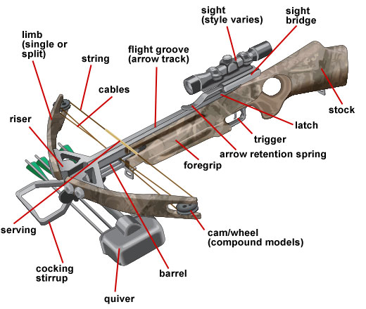

| Type of Bow
| Pros |
Cons |
| Compound Bows
|
- can hole a greater poundage for longer
- Good for hunting
- Easy to transport and store
|
- Looses the feel and connection to traditional archery
- Is extremely sensitive to the archer's stance at this can cause deviation to the arrow's path
- Sometimes you can't feel the full shot as you are not feel ing the full poundage of the draw
|
| Recurve Bows

|
- Is the only style of archery reconised as on official olympic sport
- There are different styles of recurve that one can shoot
- An archer is more one with his/her bow( you feel every shot)
- Most can be taken down (taken apart) for easy transport
- Easy to upgrade certain parts of the bow to increase poundage or accuracy
- You feel a connection to past archers an the the style they shot in
- Very accurate at medium range.
|
- Its harder to pull a higher poundage
- Need to know the correct arrow for the different poundage
- Arrows have less force that that of a compound or crossbow
|
| Crossbows

|
- Can soot great distances
- Great for hunting
- Extremely accurate at all distances
- Easy to shoot
- Can shoot great distances
|
- Reloading is slow
- Transporting can be difficult
- Can get very expensive
- Easy to dry-fire which can cause serious damage to the bow
|
| Longbows
|
- Easy to shoot
- More durable
- Has a smoother draw
- Relitively quiet
- Less slack in the string when drawing
|
- Long and arkward to store
- Fires arrows slower
- Not as powerful
- Can't be taken apart
- Can be difficult to transport due to its length
- Not as maneuverable
|